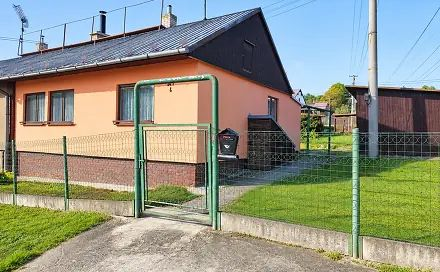

Previously known advert / cross-list
prodej domu 70 m² s pozemkem 600 m² Pětiletky, Ostrava - Heřmanice 3 250 000 Kč
prodej domu 70 m² s pozemkem 600 m² Pětiletky, Ostrava - Heřmanice 3 250 000 Kč
Not stated → 3,250,000 CZK
Original advert ↗